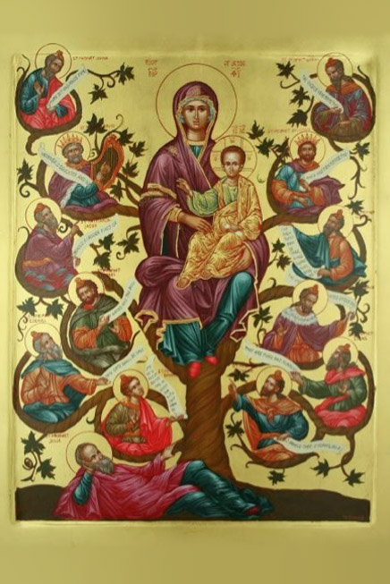

Leitura Orante
Leituras do Dia
Terça-feira - Natividade de Nossa
Senhora
(Branco - Ofício da festa)
8 de setembro de 2020
Leitura Orante do Evangelho
Ouça o áudio da oração e reflexão do padre Francisco das Chagas


Oração do dia
Abri, ó Deus, para os vossos servos e servas os tesouros da vossa graça; e assim como a maternidade de Maria
foi a aurora da salvação, a festa do seu nascimento aumente em nós a vossa paz. Por Nosso Senhor Jesus
Cristo, Vosso Filho, na unidade do Espírito Santo.
Leitura: Miqueias 5,1-4
Assim diz o Senhor:1 “Tu, Belém de Éfrata, pequenina entre os mil povoados de Judá, de ti há de sair aquele que dominará em Israel; sua origem vem de tempos remotos, desde os dias da eternidade. 2Deus deixará seu povo ao abandono, até o tempo em que uma mãe der à luz; e o resto de seus irmãos se voltará para os filhos de Israel. 3Ele não recuará, apascentará com a força do Senhor e com a majestade do nome do Senhor seu Deus; os homens viverão em paz, pois ele agora estenderá o poder até os confins da terra, 4e ele mesmo será a paz”. – Palavra do Senhor.
Salmo Responsorial: 70(71); 12(13)
Exulto de alegria no Senhor.
MÉ justo o Senhor em seus caminhos, é santo em toda obra que ele faz. Ele está perto da pessoa que o invoca, de todo aquele que o invoca lealmente.
Exulto de alegria no Senhor.
Uma vez que confiei no vosso amor, meu coração, por vosso auxílio, rejubile, e que eu vos cante pelo bem que me fizestes!
Evangelho: Mateus 1,1-16.18-23 ou 18-23
1 Livro da origem de Jesus Cristo, filho de Davi, filho de Abraão. 2Abraão gerou Isaac; Isaac gerou Jacó; Jacó gerou Judá e seus irmãos. 3 Judá gerou Farés e Zara, cuja mãe era Tamar. Farés gerou Esrom; Esrom gerou Aram; 4Aram gerou Aminadab; Aminadab gerou Naasson; Naasson gerou Salmon; 5Salmon gerou Booz, cuja mãe era Raab. Booz gerou Obed, cuja mãe era Rute. Obed gerou Jessé. 6Jessé gerou o rei Davi. Davi gerou Salomão, daquela que tinha sido a mulher de Urias. 7Salomão gerou Roboão; Roboão gerou Abias; Abias gerou Asa; 8Asa gerou Josafá; Josafá gerou Jorão; Jorão gerou Ozias; 9Ozias gerou Jotão; Jotão gerou Acaz; Acaz gerou Ezequias; 10Ezequias gerou Manassés; Manassés gerou Amon; Amon gerou Josias.11 Josias gerou Jeconias e seus irmãos, no tempo do exílio na Babilônia. 12Depois do exílio na Babilônia, Jeconias gerou Salatiel; Salatiel gerou Zorobabel;13 Zorobabel gerou Abiud; Abiud gerou Eliaquim; Eliaquim gerou Azor; 14Azor gerou Sadoc; Sadoc gerou Aquim; Aquim gerou Eliud; 15Eliud gerou Eleazar; Eleazar gerou Matã; Matã gerou Jacó. 16Jacó gerou José, o esposo de Maria, da qual nasceu Jesus, que é chamado o Cristo. [ 18A origem de Jesus Cristo foi assim: Maria, sua mãe, estava prometida em casamento a José e, antes de viverem juntos, ela ficou grávida pela ação do Espírito Santo. 19José, seu marido, era justo e, não querendo denunciá-la, resolveu abandonar Maria em segredo. 20Enquanto José pensava nisso, eis que o anjo do Senhor apareceu-lhe em sonho e lhe disse: “José, filho de Davi, não tenhas medo de receber Maria como tua esposa, porque ela concebeu pela ação do Espírito Santo. 21Ela dará à luz um filho, e tu lhe darás o nome de Jesus, pois ele vai salvar o seu povo dos seus pecados”. 22Tudo isso aconteceu para se cumprir o que o Senhor havia dito pelo profeta:23 “Eis que a virgem conceberá e dará à luz um filho. Ele será chamado pelo nome de Emanuel, que significa: Deus está conosco”. ]– Palavra da Salvação.
Leituras do mês
TAGS
missao Amazonia evengel covid-19 indigenas novica papa francisco
Destaques
Província Stella Matutina
Rua São Benedito, 2146 - Santo Amaro - São Paulo - SP |
Tel. (11)
5547-7222


Província Spiritus Divinae Sapientiae
Rua Arnaldo Janssen, 320 - Cara-Cara - Ponta Grossa - PR |
Tel. (42) 3326 4091